Purpose:
This post is made to address a task from a data set posted to Kaggle. I will comply with task requests to exhibit how I would go about real-world analysis in regards to weekly-sales over a number of years to drive insights and then develop a model to forecast sales.
For this particular post, more important to me than the chance to practice visualization is how well I fare in forecasting through multiple linear regression. I will only include code chunks beginning with my regression analysis, but full code for this markdown file and my drafting script will be available on Github.

The Shape of the Data
## [1] "A summary of our data"
## store date weekly_sales holiday_flag temperature fuel_price cpi unemployment
## Min. : 1 Min. :2010-02-05 Min. : 209986 Min. :0.00000 Min. : -2.06 Min. :2.472 Min. :126.1 Min. : 3.879
## 1st Qu.:12 1st Qu.:2010-10-08 1st Qu.: 553350 1st Qu.:0.00000 1st Qu.: 47.46 1st Qu.:2.933 1st Qu.:131.7 1st Qu.: 6.891
## Median :23 Median :2011-06-17 Median : 960746 Median :0.00000 Median : 62.67 Median :3.445 Median :182.6 Median : 7.874
## Mean :23 Mean :2011-06-17 Mean :1046965 Mean :0.06993 Mean : 60.66 Mean :3.359 Mean :171.6 Mean : 7.999
## 3rd Qu.:34 3rd Qu.:2012-02-24 3rd Qu.:1420159 3rd Qu.:0.00000 3rd Qu.: 74.94 3rd Qu.:3.735 3rd Qu.:212.7 3rd Qu.: 8.622
## Max. :45 Max. :2012-10-26 Max. :3818686 Max. :1.00000 Max. :100.14 Max. :4.468 Max. :227.2 Max. :14.313
## [1] "The first 6 rows"
## # A tibble: 6 x 8
## store date weekly_sales holiday_flag temperature fuel_price cpi unemployment
## <dbl> <date> <dbl> <dbl> <dbl> <dbl> <dbl> <dbl>
## 1 1 2010-02-05 1643691. 0 42.3 2.57 211. 8.11
## 2 1 2010-02-12 1641957. 1 38.5 2.55 211. 8.11
## 3 1 2010-02-19 1611968. 0 39.9 2.51 211. 8.11
## 4 1 2010-02-26 1409728. 0 46.6 2.56 211. 8.11
## 5 1 2010-03-05 1554807. 0 46.5 2.62 211. 8.11
## 6 1 2010-03-12 1439542. 0 57.8 2.67 211. 8.11
This data set is a time series of 45 unique Walmart stores, their reported weekly sales from 2010-02-05 to 2012-10-26, and measurements of their CPI (consumer price index - a measurement of inflation), unemployment rate, local fuel price, temperature, and whether or not that sales week marked a holiday sales event.
Which store has maximum sales?
Store 14 had the highest reported sales on the week ending 2010-12-24. For that week, they sold a total of $3,818,686 USD.
In Total?
For the whole time period, Store 20 had the highest amount of sales with an aggregate total of $301,397,792.
On Average?
Store 20 had the highest average weekly sales figure of $2,107,676
Which store had max standard deviation (std dev)?
Store 14 had the largest std dev of $317,569. It should be noted that the weekly sales of this store do not follow a normal distribution, so we should not draw conclusions about the spread of the sales in regards to the std dev.
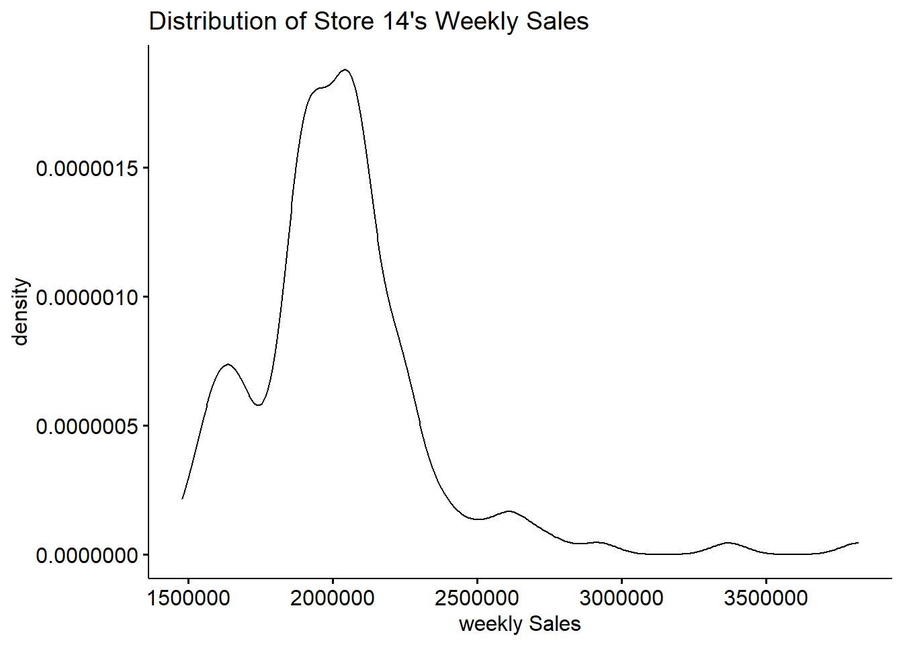
How does std dev compare to the mean? (coefficient of variation)
## [1] "A table arranged by stores with highest coefficient of variation, truncated at store 14"
## # A tibble: 13 x 4
## store sdev avg coef_var
## <dbl> <dbl> <dbl> <dbl>
## 1 35 211243. 919725. 23.0
## 2 7 112585. 570617. 19.7
## 3 15 120539. 623312. 19.3
## 4 29 99120. 539451. 18.4
## 5 23 249788. 1389864. 18.0
## 6 21 128753. 756069. 17.0
## 7 45 130169. 785981. 16.6
## 8 16 85770. 519248. 16.5
## 9 18 176642. 1084718. 16.3
## 10 36 60725. 373512. 16.3
## 11 25 112977. 706722. 16.0
## 12 10 302262. 1899425. 15.9
## 13 14 317570. 2020978. 15.7
Despite store 14 having the largest std dev, in regards to its own mean weekly sales, the standard deviation is not all that big. That is to say, store 14 makes an average weekly sales rate of $2,020,978. Compare to that number, a std dev of $317,569 is not all that large. On the other hand, the store with largest relative std dev (coefficient of variation) is store 35 that makes a average weekly sales of $919,725 and has a std dev of $211,243. Coefficient of variation, or the relative standard deviation is expressed as the ratio between std dev and the mean.
Which Store/s Had Good Quarterly Growth Rate in Q3’ 2012
Addressing this task appropriately requires an understanding of Walmart’s fiscal calendar. Being that I don’t work there or have any connections in the know, I consulted Google. These are the results I took a cue from and proceeded with my analysis based on. The fiscal year begins in February.
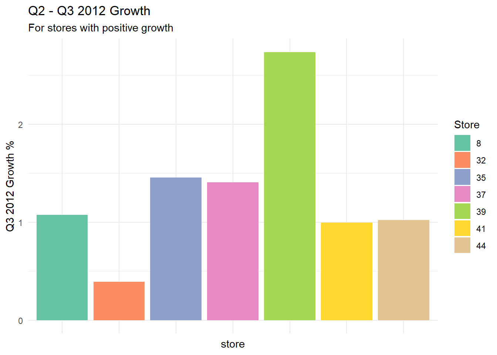
Store 39 had the highest growth percent in Q3 2012 from the previous quarter. They grew sales by ~2.7%.
Only the 7 stores shown in the plot had a positive growth rate.
How many stores had a positive growth rate compared to last year Q3?
And Yearly Growth Rate of Q3 2012?
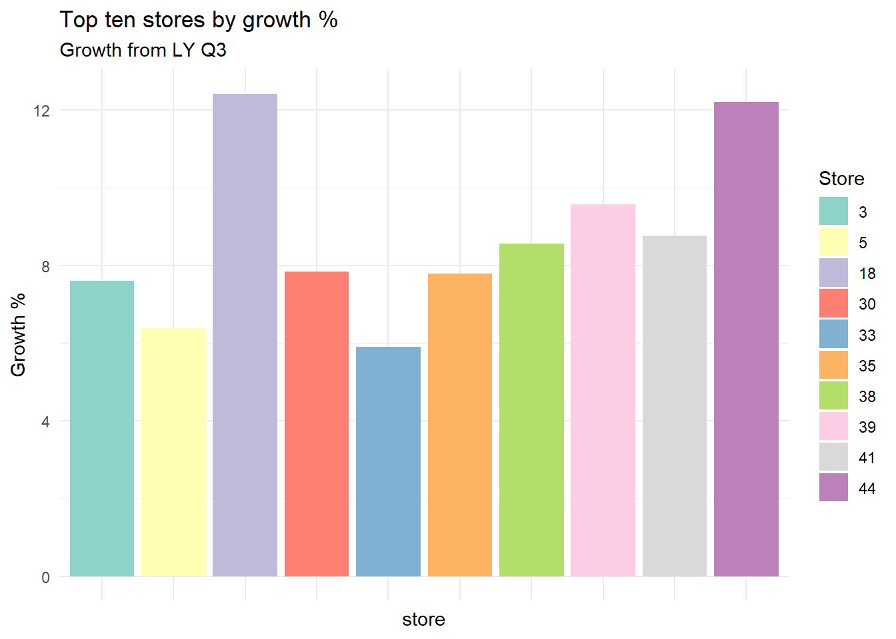
## [1] "A total of 32 stores had positive Q3 growth rate from 2011 to 2012"
A lot more stores had positive growth from Q3 2011 to 2012 than stores that had positive growth from Q2 to Q3 in 2012.
Holidays and their Impact on Sales
The kaggle task post suggests that some holiday events have a negative impact on sales, whereas some others have a positive impact on sales. I find issue with that suggestion or how it is worded: sales events are usually used in reaction to current sales. They’re used to sell through inventory, to invigorate sales growth in an otherwise dull period, to attract customers into the store on well-established holidays. I do believe it’s possible for a holiday to have a positive impact on sales (see Black Friday), but I find it strange to suggest a holiday sales event could incur worse sales than if it were not a holiday sales event. It would have to be one universally tasteless and insensitive holiday sales event to turn people away from shopping.
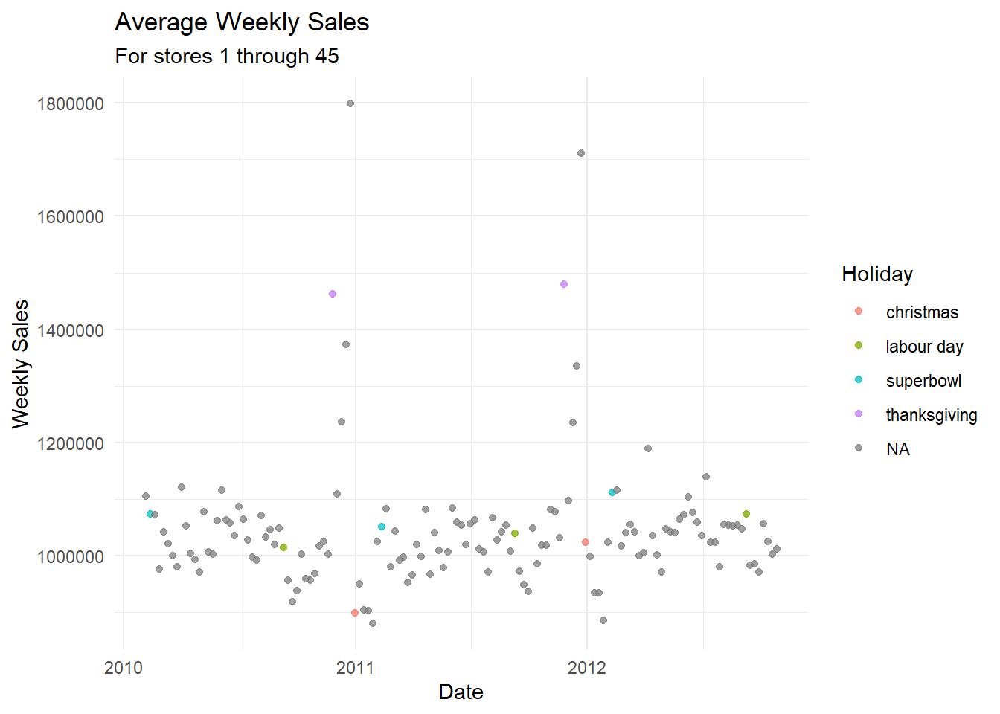
This scatter plot allows us to see the average sales for the whole company (meaning our sample of 45 stores) for all weeks in our dataset. Weeks containing a Holiday sales event are filled with color. Immediately we might notice that ‘Thanksgiving’ is quite high when compared to its neighbor sales weeks and ‘Christmas’ is rather low. It should be noted these holiday events don’t actually fall on the holiday they are named for. ‘Thanksgiving’ falls on Black Friday and ‘Christmas’ is always the last Friday in December. Now it makes sense as to how these holiday sales are impacted by when they occur: Black Friday is a long-running and possibly the largest shopping holiday in America. This is probably the only holiday I would argue has a direct impact on sales. The ‘Christmas’ holiday event sees such a low performance in sales as this is likely due to many markdowns meant to clear inventory of gifts and decorations that were not picked up at full price just a week earlier. That is, it’s not because it is a Christmas holiday sales event that causes it to see such poor performance, it is because it happens a few days after Christmas when shopping is no longer a priority.
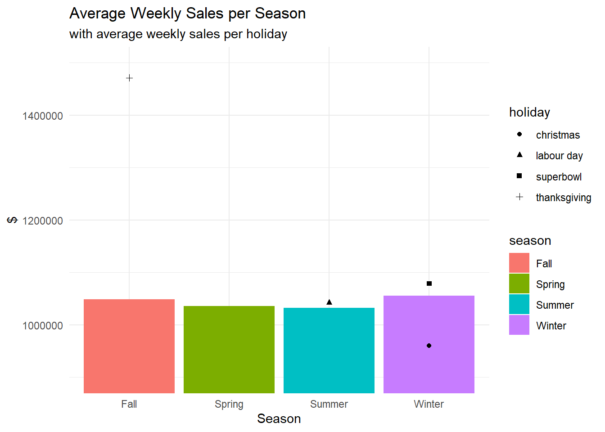
This bar chart allows us to visualize the average weekly sale per season against the average weekly sales for a holiday within that season. Black Friday has much higher sales than the average for the season. ‘Christmas’ performs much worse, Labor Day and Superbowl perform slightly better than the average.
Sales by Month
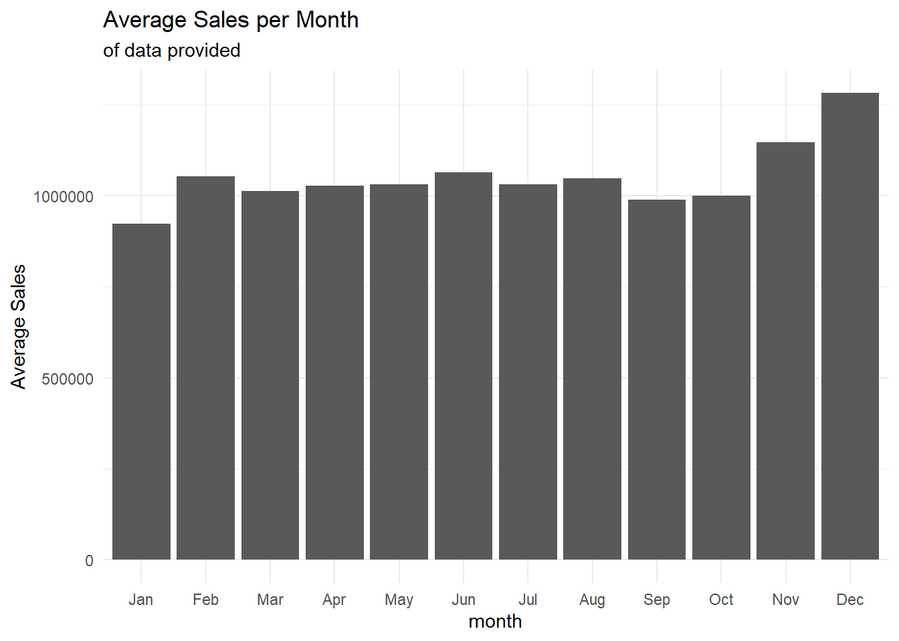
The problem with this chart is that we don’t have a full three years of dates represented in our data set. As mentioned previously, weekly sales recording begins with 2010-02-05 and ends in 2012-10-26. There is only one year we have a full range of months available to observe. If any years had markedly different sales overall, then an average of two observations compared to three would not be reliable to compare.
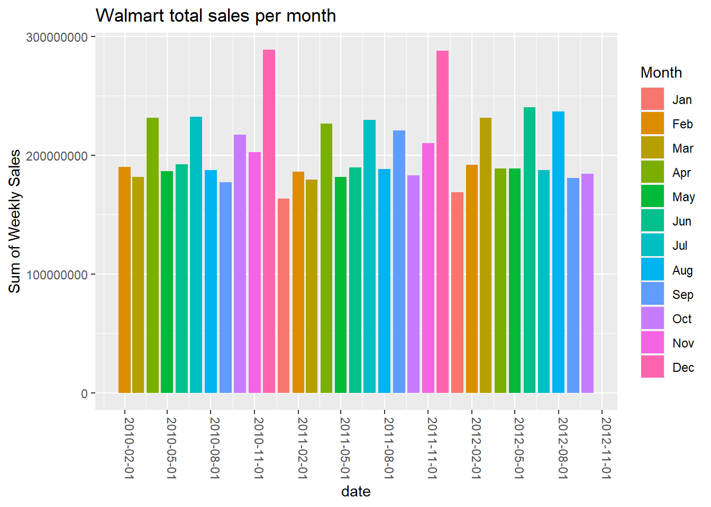
This chart gives us a better understanding of each month compared by total sales, but can be difficult given how many colors there are to discern. Nonetheless, we can see that December is consistently the highest selling month and January is the lowest selling month, just as our previous plot had shown.
## [1] "Not everything needs a plot. Here is a table of total sales instead."
## # A tibble: 12 x 4
## month `2010` `2011` `2012`
## <chr> <dbl> <dbl> <dbl>
## 1 April 231412368. 226526511. 188920906.
## 2 August 187640111. 188599332. 236850766.
## 3 December 288760533. 288078102. NA
## 4 February 190332983. 186331328. 192063580.
## 5 July 232580126. 229911399. 187509452.
## 6 June 192246172. 189773385. 240610329.
## 7 March 181919802. 179356448. 231509650.
## 8 May 186710934. 181648158. 188766479.
## 9 November 202853370. 210162355. NA
## 10 October 217161824. 183261283. 184361680.
## 11 September 177267896. 220847738. 180645544.
## 12 January NA 163703967. 168894472.
Sometimes a chart is necessary, sometimes there’s too much information to visualize. This should be sufficient to understand the yearly growth of sales in a given month per year and when a month in a given year is missing.
Sales by Semester
I’m not sure if semester has any different type of meaning in business, but how I understand it is by an academic semester. The first semester beginning in the Fall and ending in the Winter. The second Semester comprising the other seasons.
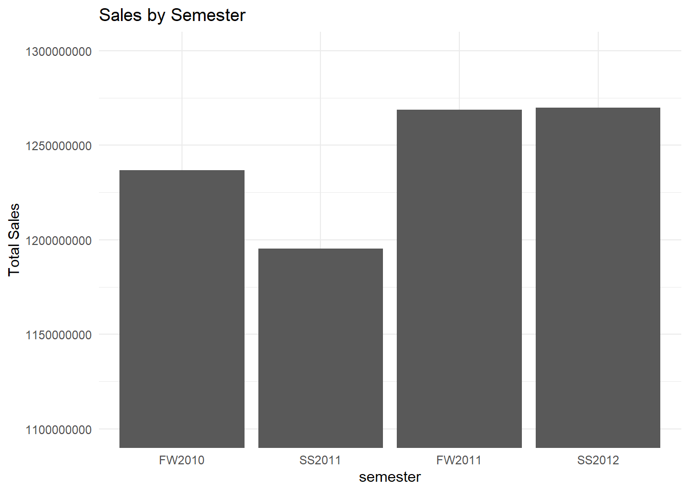
A semester view isn’t too meaningful in this case, being that we are missing months of data here and there. Nevertheless, we can see that sales have bounced up since the 2010-2011 academic year.
Statistical Forecasting and Linear Regression
A linear regression is a statistical model meant to simulate the relationship between a dependent variable (Y) and independent variable/s (x). When there is only one independent variable, this is known as simple linear regression, when there are multiple independent variables, this is known as multiple linear regression.
Today, the kaggle prompt requests that we make a multiple linear regression to forecast weekly sales. Now knowing that sales is our Y variable, we can construct a formula to give shape to our model. We will only design a linear regression model for one location (store 1) as forecasting with the x variables we will use should only be done at the individual location level.
The first model
#a separate df for observations at store 1
store1_all_dates <- walmart_sales %>%
mutate(value = 1) %>%
#this line one-hot encodes the holiday variable
spread(holiday, value, fill = 0) %>%
filter(store ==1) %>%
select(date, weekly_sales, temperature,
fuel_price, cpi, unemployment,
christmas, `labour day` , superbowl, thanksgiving) %>%
#this changes the date into a numeric integer based on day of the year
mutate(day_of_year = yday(date)) %>%
arrange(date)
fmla <- as.formula('log(weekly_sales) ~ temperature + cpi +
fuel_price + unemployment +
christmas + `labour day` + superbowl +
thanksgiving + day_of_year + I(temperature^2) +
I(cpi^2) + I(fuel_price^2) + I(unemployment^2)')
full_dates_model <- lm(fmla, store1_all_dates)
summary(full_dates_model)
##
## Call:
## lm(formula = fmla, data = store1_all_dates)
##
## Residuals:
## Min 1Q Median 3Q Max
## -0.16142 -0.04571 -0.00123 0.03805 0.36633
##
## Coefficients:
## Estimate Std. Error t value Pr(>|t|)
## (Intercept) 97.64760866 56.54849002 1.727 0.086598 .
## temperature -0.00989945 0.00531067 -1.864 0.064585 .
## cpi -0.85912555 0.54038461 -1.590 0.114319
## fuel_price -0.04774192 0.38635691 -0.124 0.901848
## unemployment 2.35659961 0.84803887 2.779 0.006270 **
## christmas -0.19448142 0.06126889 -3.174 0.001879 **
## `labour day` 0.01682828 0.04646154 0.362 0.717797
## superbowl 0.06967459 0.05143332 1.355 0.177894
## thanksgiving 0.21835273 0.05797075 3.767 0.000251 ***
## day_of_year 0.00033153 0.00008709 3.807 0.000217 ***
## I(temperature^2) 0.00005839 0.00003924 1.488 0.139210
## I(cpi^2) 0.00200254 0.00125030 1.602 0.111678
## I(fuel_price^2) 0.01611603 0.05803260 0.278 0.781682
## I(unemployment^2) -0.15350291 0.05600452 -2.741 0.006997 **
## ---
## Signif. codes: 0 '***' 0.001 '**' 0.01 '*' 0.05 '.' 0.1 ' ' 1
##
## Residual standard error: 0.07844 on 129 degrees of freedom
## Multiple R-squared: 0.349, Adjusted R-squared: 0.2834
## F-statistic: 5.319 on 13 and 129 DF, p-value: 0.0000001392
This model attempts to describe linear relationships between our X variables,
- recorded temperature at store 1 corresponding to the date recorded
- CPI (consumer price index), which is a measurement of inflation, for store 1 corresponding to the date recorded
- the prevailing fuel price of the region around store 1 for the recorded date
- the prevailing unemployment rate for the area around store 1 on the recorded date
- Whether or not it was any of our four Holiday events (marked by a 1 for yes and 0 for no)
- the day of the year given that January 1st will be recorded as 1 and the last day in December will be recorded as 365 or 364
and our Y variable of weekly sales (put into log form - which can be read as a percent change).
## [1] "Model Coefficient Estimates"
## (Intercept) temperature cpi fuel_price unemployment christmas `labour day` superbowl thanksgiving day_of_year I(temperature^2)
## 97.64760866188 -0.00989945213 -0.85912554510 -0.04774192215 2.35659960882 -0.19448141639 0.01682828089 0.06967459434 0.21835272692 0.00033152991 0.00005838647
## I(cpi^2) I(fuel_price^2) I(unemployment^2)
## 0.00200254220 0.01611603351 -0.15350290575
So we can interpret the coefficient estimates of our model as a percent change in weekly sales given one unit of increase for that given variable (controlled for all other variables). Meaning, on two days that are exactly the same in all the ways our independent variables can describe (except for ‘Christmas’), one of those days would be estimated to have 19.4% less sales than the other day if it happened to be a ‘Christmas’ sales event. Recall from our earlier graph that the ‘Christmas’ holiday sales event average weekly sales was substantially lower than the average for the season. Likewise, the model estimates a 4.7% decrease in sales given a dollar increase in fuel price, and 21.8% increase in sales if its ‘Thanksgiving’ AKA Black Friday.
One thing to be aware of is that not all of these estimates are statistically significant. Our model also provides the P-value for every coefficient estimate it has, which is the probability that this relationship it is describing numerically is happening due to random chance rather than an actual statistically evident relationship. When a p-value is less than 5%, we can claim that estimate as ‘statistically significant.’ Our model reports that the following variable coefficient estimates are statistically significant:
- Unemployment
- Unemployment squared
- Christmas
- Thanksgiving
- The day of the year
Also, there is our R-squared value, and adjusted R-squared. R-Squared is a statistic used to describe just how much of the variance in our observed Y value is explained by our variables. Meaning, this model only accounts for 34.9% of the variance we see in weekly sales. The balance is unexplained by our model. Adjusted R-squared is the R-squared variable penalized for however many variable we have.
Here is a poor – but hopefully still useful – analogy to explain adjusted R-squared. If I were a psychic and told you to pick a number between 1 and 10, I could possibly guess your number on the first try, or the next, or the next and so on. I could go through all those numbers until I ‘guess’ your number, but my psychic abilities would be less and less impressive the more I guess. That is what the adjusted R-squared does: it penalizes our model for however many variables we have fitted. This is because of a concept called overfitting. Like being a psychic, we can pack our model full of independent variables (guess as many times as we like) and that would improve the model’s ability to make estimates by some amount (any new information is just info for the model to work with). Just like being a psychic, adding in a ton of variables to hopefully improve the R-squared is not a meaningful tactic, and so our adjusted R-square gives us a new form of R-squared penalized by how many variables we have.
Model diagnostics
There are many ways to diagnose how well a model ‘performs.’ Oftentimes, people will turn to the R-squared value, they may also look at their residuals versus fitted values, assessing the distribution of the residuals, etc. However, one of the more useful diagnostics of modeling, and perhaps the best, as far as our use case goes, is testing it by making predictions. Typically, when statisticians devise a model, they will use it on data the model has not seen to make predictions. Then they can visibly observe what the model will predict given new information versus what the actual observed value is. Unfortunately, in this instance we have used all of our weekly sales observations (for store 1) to make our previous model. I’d like to believe that our model as it is now would perform the best of alternatives known to me, but I’ll have no way of testing this without making predictions. For my next model, I will split the last data set we made into two testing and training data sets so that we can build a model and then test how it performs on data it has never seen before.
The second model
#training data
store1_train <- walmart_sales %>%
mutate(value = 1) %>%
#this line one-hot encodes the holiday variable
spread(holiday, value, fill = 0) %>%
filter(store ==1) %>%
select(date, weekly_sales, temperature,
fuel_price, cpi, unemployment,
christmas, `labour day` , superbowl, thanksgiving) %>%
#this changes the date into a numeric integer based on day of the year
mutate(day_of_year = yday(date)) %>%
#this filters the data to only dates in 2011
filter(str_detect(date, regex('^2011.*$')))
#test data
store1_test <- walmart_sales %>%
mutate(value = 1) %>%
#this line one hot encodes the holiday variable
spread(holiday, value, fill = 0) %>%
filter(store ==1) %>%
select(date, weekly_sales, temperature,
fuel_price, cpi, unemployment,
christmas, `labour day` , superbowl, thanksgiving) %>%
#this changes the date into a numeric integer based on day of the year
mutate(day_of_year = yday(date)) %>%
#this filters the data to dates not in 2011
filter(!str_detect(date, regex('^2011.*$')))
fmla <- as.formula('log(weekly_sales) ~ unemployment +
I(temperature^2) + christmas +
`labour day` + superbowl + thanksgiving')
#our new model
single_year_test_model <- lm(fmla , data = store1_train)
summary(single_year_test_model)
##
## Call:
## lm(formula = fmla, data = store1_train)
##
## Residuals:
## Min 1Q Median 3Q Max
## -0.18794 -0.03813 0.00000 0.03794 0.35307
##
## Coefficients:
## Estimate Std. Error t value Pr(>|t|)
## (Intercept) 13.793180836 0.994170989 13.874 < 0.0000000000000002 ***
## unemployment 0.065711653 0.128931658 0.510 0.61278
## I(temperature^2) -0.000012069 0.000006984 -1.728 0.09081 .
## christmas -0.066831767 0.095488859 -0.700 0.48760
## `labour day` 0.000934911 0.094009654 0.010 0.99211
## superbowl 0.030114709 0.095244063 0.316 0.75332
## thanksgiving 0.258765043 0.093337580 2.772 0.00807 **
## ---
## Signif. codes: 0 '***' 0.001 '**' 0.01 '*' 0.05 '.' 0.1 ' ' 1
##
## Residual standard error: 0.09139 on 45 degrees of freedom
## Multiple R-squared: 0.2206, Adjusted R-squared: 0.1167
## F-statistic: 2.123 on 6 and 45 DF, p-value: 0.06905
store1_test <- store1_test %>%
mutate(prediction = predict(single_year_test_model, newdata = store1_test))
ggplot(store1_test, aes(date, weekly_sales)) +
geom_line() +
geom_point(aes(date, exp(prediction), color = 'prediction')) +
ggtitle('Forecast of Sales for Store 1') +
labs(subtitle = 'For 2010 and 2012') +
ylab('Weekly Sales') +
theme_minimal() +
theme(legend.title = element_blank())
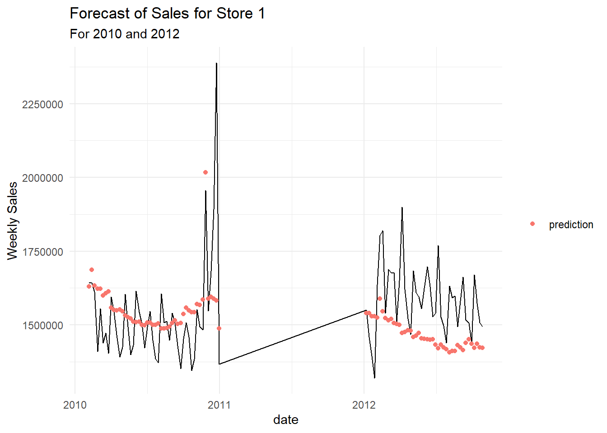
Our new model takes the following x variables:
- unemployment
- temperature squared
- and the four holidays
These were chosen by iteratively adjusting the model and using it to plot prediction against observations in my test data. Despite having a higher R-squared value in different models, those same models had predictions that were astoundingly off from the observed values of weekly sales. R-Squared isn’t always a good metric for model performance, it can be very misleading.
It’s also worth noting that no predictions are made between 2011 and 2012 given those were the observations used to train our model. Likewise, the line of observed sales between 2011 and 2012 is not meaningful either, this is just the plot connecting the two last know points.
This model is not too bad, but still I wonder… could it be improved by sampling observations from all three years? I only used 2011 observations in my training data. There must be variations between all my independent variables between all three years that the model is not being shown. Let’s try again.
The third and final model
#initializing counts for a for loop
x<- 1
y<- 54
z<- 107
#initializing empty vectors to later filter by index
num_vec1 <- vector('numeric', 18L)
num_vec2 <- vector('numeric', 17L)
num_vec3 <- vector('numeric', 17L)
#creates first vector of row-indices for filtering
for (i in 1:18){
num_vec1[i] <- x
x<- x+3
}
#creates second vector of row-indices
for(i in 1:17){
num_vec2[i] <- y
y<- y+3
}
#creates third vector of row-indices
for(i in 1:17){
num_vec3[i] <- z
z <- z+3
}
#creates one vector from all above
count <- 1
dates_vec <- vector('numeric', 52L)
for (i in 1:18){
dates_vec[count] <- num_vec1[i]
dates_vec[count+1] <- num_vec2[i]
dates_vec[count+2] <- num_vec3[i]
count <- count + 3}
#rearranges the indices appropriately
dates_vec <- dates_vec[1:52]
# several dates are NA since 2012 doesn't go past October.
#We will replace these dates with its 2010 or 2011 comparable
dates_vec[42] <- 42
dates_vec[45] <- 97
dates_vec[48] <- 48
dates_vec[51] <- 103
fmla <- as.formula('log(weekly_sales) ~ unemployment +
temperature + cpi + fuel_price +
christmas + `labour day` + superbowl+
thanksgiving + day_of_year')
#new model from training
rndm_date_train_model <- lm(fmla, data = store1_all_dates[dates_vec,])
rndm_dates_test_store_1 <- store1_all_dates[-dates_vec,]
rndm_dates_test_store_1 <- rndm_dates_test_store_1 %>%
mutate(prediction = predict(rndm_date_train_model, newdata = rndm_dates_test_store_1))
summary(rndm_date_train_model)
##
## Call:
## lm(formula = fmla, data = store1_all_dates[dates_vec, ])
##
## Residuals:
## Min 1Q Median 3Q Max
## -0.14485 -0.05177 0.00000 0.04609 0.25152
##
## Coefficients:
## Estimate Std. Error t value Pr(>|t|)
## (Intercept) 12.3089928 1.7630941 6.981 0.0000000154 ***
## unemployment 0.0416296 0.0563743 0.738 0.4643
## temperature -0.0025826 0.0009746 -2.650 0.0113 *
## cpi 0.0076970 0.0069091 1.114 0.2716
## fuel_price 0.0252805 0.0494330 0.511 0.6117
## christmas -0.1899576 0.0927410 -2.048 0.0468 *
## `labour day` -0.0212437 0.0856425 -0.248 0.8053
## superbowl 0.0511178 0.0881454 0.580 0.5651
## thanksgiving 0.2222830 0.0858365 2.590 0.0131 *
## day_of_year 0.0002919 0.0001317 2.216 0.0322 *
## ---
## Signif. codes: 0 '***' 0.001 '**' 0.01 '*' 0.05 '.' 0.1 ' ' 1
##
## Residual standard error: 0.08144 on 42 degrees of freedom
## Multiple R-squared: 0.4336, Adjusted R-squared: 0.3122
## F-statistic: 3.572 on 9 and 42 DF, p-value: 0.002264
ggplot(rndm_dates_test_store_1, aes(date, weekly_sales)) +
geom_line() +
geom_point(aes(y = exp(prediction), color = 'predition')) +
ggtitle('Forecast of sales for Walmart Store 1') +
ylab('Weekly Sales $') +
labs(subtitle = 'Prediction in red')
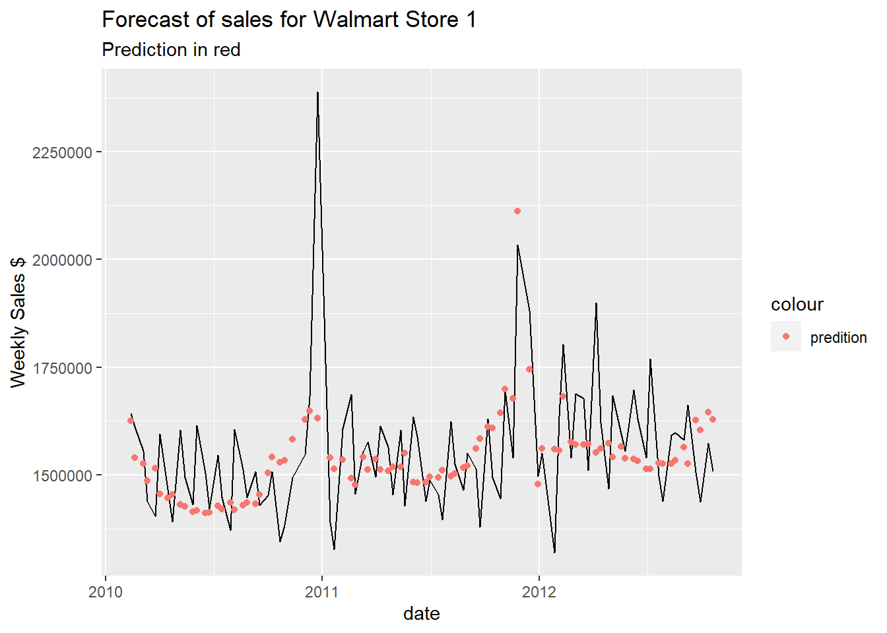
This looks like our best performing model yet! One annoying thing is that it does not capture the huge spike in sales the week ending before Christmas. Even though this is not considered a holiday event from Walmart’s perspective, we should use our domain knowledge of there being last minute Christmas gift shopping during this week
store1_all_dates <- store1_all_dates %>%
mutate(before_xmas = if_else(grepl(regex('^.{4}-12-24|^.{4}-12-23|
^.{4}-12-22|^.{4}-12-21|
^.{4}-12-20|^.{4}-12-19|
^.{4}-12-18'), date), 1, 0))
fmla <- as.formula('log(weekly_sales) ~ unemployment +
temperature + cpi + fuel_price + christmas +
`labour day` + superbowl + thanksgiving +
before_xmas + day_of_year')
rndm_date_test_model <- lm(fmla, data = store1_all_dates[dates_vec,])
rndm_dates_removed_store_1 <- store1_all_dates[-dates_vec,]
rndm_dates_removed_store_1 <- rndm_dates_removed_store_1 %>%
mutate(prediction = predict(rndm_date_test_model, newdata = rndm_dates_removed_store_1))
summary(rndm_date_test_model)
##
## Call:
## lm(formula = fmla, data = store1_all_dates[dates_vec, ])
##
## Residuals:
## Min 1Q Median 3Q Max
## -0.15422 -0.04224 0.00000 0.04136 0.16310
##
## Coefficients:
## Estimate Std. Error t value Pr(>|t|)
## (Intercept) 14.0000319 1.5619178 8.963 0.0000000000329 ***
## unemployment -0.0109531 0.0498459 -0.220 0.827165
## temperature -0.0021363 0.0008395 -2.545 0.014796 *
## cpi 0.0012840 0.0061070 0.210 0.834518
## fuel_price 0.0482429 0.0425915 1.133 0.263926
## christmas -0.1706284 0.0793446 -2.150 0.037464 *
## `labour day` -0.0027748 0.0732807 -0.038 0.969979
## superbowl 0.0507517 0.0752778 0.674 0.503973
## thanksgiving 0.2383726 0.0734123 3.247 0.002328 **
## before_xmas 0.3189611 0.0783194 4.073 0.000207 ***
## day_of_year 0.0002051 0.0001145 1.791 0.080655 .
## ---
## Signif. codes: 0 '***' 0.001 '**' 0.01 '*' 0.05 '.' 0.1 ' ' 1
##
## Residual standard error: 0.06955 on 41 degrees of freedom
## Multiple R-squared: 0.5967, Adjusted R-squared: 0.4983
## F-statistic: 6.066 on 10 and 41 DF, p-value: 0.00001377
ggplot(rndm_dates_removed_store_1, aes(date, weekly_sales)) +
geom_line() +
geom_point(aes(y = exp(prediction)), color = 'red') +
ggtitle('Forecast of sales for Walmart Store 1') +
ylab('Weekly Sales $') +
labs(subtitle = 'Prediction in red')
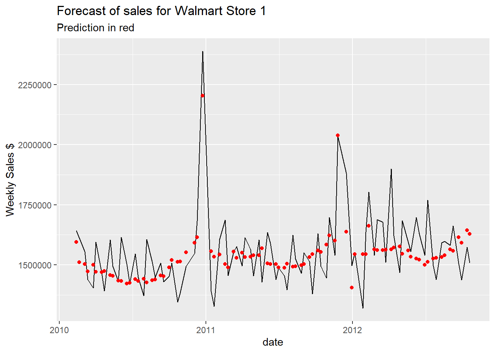
I feel quite satisfied with out results! From a training model that utilized 52 observations of
- unemployment
- temperature
- CPI
- fuel price
- binary values indicating whether it was Christmas, Labor Day, Thanksgiving, or a Superbowl sales event
- Whether or not it was the week before Christmas
- The numeric day of the year
we were able to predict with some accuracy for 91 observations of weekly sales.
Hypothesis to the relationships of the variables
However the model interprets the relationship between our variables can be seen above from the output of the code chunk, but I wanted to provide my generalized estimation of the relationships between the variables.
- Unemployment - across the various models that have been devised, the multiple linear regression has estimated both sales increases and decreases given a one unit increase in unemployment. My intuition tells me the more people that are unemployed in a society then the less discretionary spending there is. I would believe there is a negative linear relationship between unemployment and sales. I believe our model estimated any positive linear relationships based on their being more observations (and particularly high sales outliers) at greater levels of unemployment - see below.
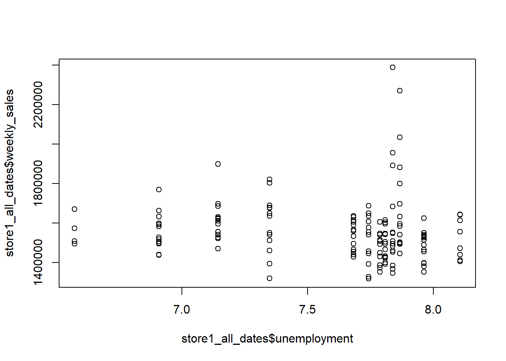
- Temperature - at large, I believe the relationship between temperature and sales to be more of a closed parabola than a line. Controlling for other variables, on days of extreme cold or heat sales would be lower being that it might be too uncomfortable to leave the house. However, not all climates have ranges of extreme cold and extreme heat. Most stores will fall into one climate zone where they would see one end of the spectrum. In the case of store 1, the lowest temperature is 35 degrees farenheit and the highest is 91. Since the coldest likely comes around the Winter, near sales-driving holidays/event, and the hottest would be in the Summer which we know has the lowest average weekly sales of all seasons, this is likely why our model estimates a negative linear relationship for increase in temperature.
- CPI - being that Consumer Price Index is a measure of inflation, I would imagine that as this number goes up then sales would too. At higher levels of CPI a typical group of consumer goods would cost more money. Being that Walmart is a retailer in consumer goods, as CPI goes up their products would likely have an increased base retail price which would show up in our data as an increase in sales amount, although it is likely a better predictor of price than sales.
- Fuel price - controlling for all other variables, I would imagine as fuel price goes up then people would stay at home more, avoid travel, and likewise shop less.
- Holidays
- I expect sales to increase for Black Friday
- Sales to decrease in the sales event after Christmas
- Labor Day and Superbowl to increase or decrease slightly - more data would be helpful to better determine this relationship
- The week before Christmas - sales should see a significant increase during this period
- Day of the year - I imagine this is best approximated by an exponential curve. Sales appear to be quite low throughout Winter after December and appear relatively stationary until the near end of the year during the holiday season when they increase significantly.
Reflections and Learnings
The inspiration behind this post was a yearning to tackle a more traditional business issue and foster my skills in linear regression and its interpretation. Being that this statistical method is still relatively new to me, I welcome any criticisms and advice in model development, diagnostics, and analysis. In attempting this task I also developed skills in R coding by utilizing adept for loops, one-hot encoding variables for regression analysis, and creating user-defined functions to condense repeat tasks.
I’m happy with the results of my linear model and would have been happy to test it on more data outside of the set provided. In the future, I think I would like to try other statistical models for forecasting. I made an attempt to learn ARIMA modeling (a typical model for forecasting time series data), but found it to be recondite and difficult to get grasp of in the time frame of which I wanted this post to go live.